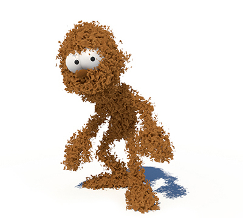

noise -> standard_volume.displacement. step_size: 0.1, volume_padding: 0.05.
网格应当闭合且没有任何自交，否则体积可能无法正确渲染。
必须添加 step_size 值并指定 standard_volume 着色器，以便将网格渲染为体积。有关如何将多边形网格渲染为体积的教程，请单击此处。有关体积 step_size 的详细信息，请单击此处。
由 Daniel M. Lara 制作的 Pepe 模型 (Pepeland)